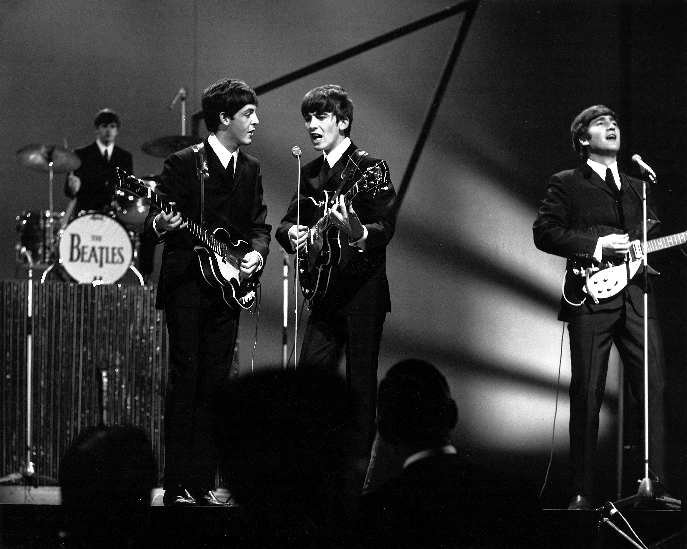
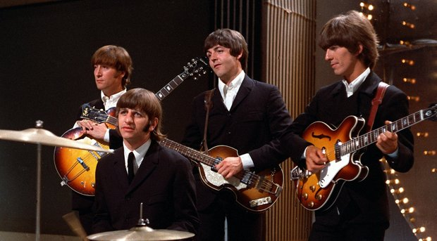

Entre acordes revolucionários e quebras de barreiras, o legado dos Beatles prova que a arte pode mudar os rumos de uma geração.
Mais do que vender bilhões de discos ou lotar estádios, o verdadeiro legado dos Beatles reside na transformação da cultura popular. Entre 1962 e 1970, o quarteto reescreveu as regras da composição e elevou a música pop de mero entretenimento adolescente à condição de alta arte.
Ao abandonarem as turnês em 1966, a banda transformou o estúdio da EMI em um laboratório de inovação sônica. Ao lado do produtor George Martin, utilizaram técnicas pioneiras e provaram que um LP comercial poderia ser uma obra temática e coesa, redefinindo o conceito de álbum musical.

No aspecto autoral, a parceria entre Lennon, McCartney, Harrison e Starr estabeleceu o modelo moderno de grupo de rock que escreve e executa o próprio material. Suas experimentações com arranjos clássicos e música indiana abriram caminhos para diversos gêneros musicais posteriores.
Antecipando a era da difusão artística moderna, os Beatles também foram pioneiros no formato de videoclipe. A produção de filmes, curtas e clipes para faixas como A Hard Day's Night e Paperback Writer estabeleceu o padrão visual para a indústria musical.

O impacto da banda estendeu-se fortemente aos movimentos socioculturais dos anos 1960. Como figuras centrais da contracultura, utilizaram sua projeção global para defender a paz durante a Guerra do Vietnã e apoiar causas de ativismo social, espelhando a guinada comportamental do Ocidente.
A relevância do grupo permanece intacta na era digital, atraindo fãs de várias gerações por meio do streaming. O mito coletivo construído pelo quarteto consolidou-se como um ponto de partida fundamental da modernidade global, mostrando o poder duradouro da criação artística.